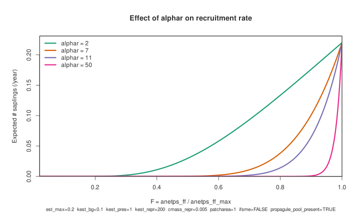

Establishment
This page describes how annual establishment is handled in DAVE for cohort and individual vegetation modes.
LPJ-GUESS also has an alternative establishment pathway used in population mode. That alternative is not described here.
What "Establishment" Means Here
In this context, establishment means adding new plants to a patch:
- for trees: adding new saplings (new cohorts or individuals)
- for grasses and mosses: introducing a PFT to a patch if it is currently absent
Representation difference:
- trees can have multiple coexisting cohorts/individuals of the same PFT in one patch
- grasses and mosses are represented by a single individual per PFT per patch (no multiple coexisting cohorts for the same grass PFT within a patch)
The annual establishment logic runs once per simulation year (after mortality).
If DAVE daily grass growth (ifdailygrass and ifdavegrowth) is enabled, those
grasses are handled by the daily process, not by the annual process described on
this page.
Annual Establishment Workflow
The annual process follows these steps.
1. Check for management-driven planting shortcut
If management specifies explicit planting density for the current planting year, the model uses the dedicated planting routine and skips the rest of the annual establishment pathway for that patch and year.
Interpretation: in this case, recruitment is imposed by management settings rather than calculated from environmental or propagule constraints.
2. Determine which woody PFTs are eligible this year
Before tree recruitment is calculated, the model counts how many woody PFTs are currently eligible to establish. Eligibility requires:
- PFT is active for this stand
- climate and site filters allow establishment
- current management/timing permits establishment (or forces planting)
This count is later used to avoid inflating total recruitment when many woody PFTs are simultaneously eligible.
3. Apply establishment filters (can this PFT establish at all?)
A PFT must pass an establishment filter that includes:
- bioclimatic limits (temperature and degree-day constraints)
- light constraints for establishment
- optional drought-limited establishment constraints
- management-related relaxations in specific planting contexts
If these filters fail, that PFT does not establish in that patch/year.
Bioclimatic limits used in this filter
In annual establishment, the following PFT limits are checked:
tcmin_est: minimum allowed 20-year coldest-month mean temperaturetcmax_est: maximum allowed 20-year coldest-month mean temperaturetwmin_est: minimum allowed warmest-month mean temperaturegdd5min_est: minimum allowed annual GDD on 5 C base
If one-soil-layer mode is used, additional limits are checked:
min_snow: minimum seasonal snow-depth requirementgdd0_min: lower bound on 20-year mean annual GDD on 0 C basegdd0_max: upper bound on 20-year mean annual GDD on 0 C base
Outside cropland and outside population mode, light-limited establishment uses:
parff_min: minimum forest-floor PAR threshold for establishment
Drought-limited establishment is optional and controlled globally:
- if
ifdroughtlimitedestab = 1(and landcover is not peatland), establishment fails whendrought_tolerance > awcont_upper - if
ifdroughtlimitedestab = 0,drought_toleranceis not used in this establishment gate
4. Establish grasses and mosses (presence-based)
For grasses and mosses in the annual pathway:
- the process primarily asks whether that PFT is already present in the patch
- if absent and eligible, one representative individual is created
- initial biomass is assigned from local potential carbon gain terms
This is different from tree establishment, which is based on expected sapling numbers.
5. Establish trees (rate-based recruitment)
For trees, the model first computes an expected number of saplings.
The expected number of saplings, \(est\), depends on maximum establishment rate, patch area, and forest-floor conditions. At simulation start, expected sapling number is simply the maximum recruitment rate scaled by patch area:
After initialization, expected saplings depend on:
- potential forest-floor assimilation conditions
- PFT recruitment sensitivity parameters
- background recruitment enabled/disabled
- propagule mass effect settings
- stand-level reproductive carbon context
If the spatial mass effect is enabled, stand-level "propagule pool" influences establishment:
If the spatial mass effect is disabled, but a propagule pool exists:
If the spatial mass effect is disabled, and no propagule pool exists:
Where:
The nonlinearity for understory condition (Fulton 1991, Eqn 4) is:
Where:
\(F\) represents relative forest-floor assimilation conditions:
\(k_{\mathrm{est,repr}}\) is a PFT-specific constant (\(k_{\mathrm{est,repr}} \times C_{\mathrm{repr}}\) should approximately equal 1 at the highest plausible value of \(C_{\mathrm{repr}}\) for the PFT).
\(k_{\mathrm{est,bg}}\) is a PFT-specific constant in range 0-1 (usually << 1) (set to zero if background establishment disabled).
\(k_{\mathrm{est,pres}}\) is a PFT-specific constant in range 0-1 (usually ~1).
\(C_{\mathrm{repr}}\) is a measure of the available reproductive biomass for this
PFT (kgC/m2). If parameter est_live_repr is true, this value represents live
reproductive biomass; otherwise, it represents total annual allocation to
reproduction.
\(\text{est}_{\mathrm{max}}\) is the (nominal) maximum establishment rate for this PFT (saplings/m2/year).
\(A_{\mathrm{patch}}\) is the patch area (m2).
\(A_{\mathrm{net,ff}}\) is potential annual net assimilation at the forest floor for this PFT (kgC/m2/year).
\(A_{\mathrm{net,ff,max}}\) is the maximum value of \(A_{\mathrm{net,ff}}\) for this PFT in this stand so far in the simulation (kgC/m2/year).
\(\alpha_r\) is a PFT-specific constant (parameter capturing non-linearity in recruitment rate relative to understorey growing conditions).
Recruitment sensitivity to \(\alpha_r\)
The figure below shows expected saplings vs \(F = A_{\mathrm{net,ff}} / A_{\mathrm{net,ff,max}}\) for multiple \(\alpha_r\) values, generated from the same equations described above.


Figure source script: analysis/establishment_plots.r.
6. Normalize by number of eligible woody PFTs
Expected tree recruitment is scaled by:
Purpose: prevent an artificial increase in total tree establishment simply because more woody PFTs are allowed in the simulation.
7. Convert expected recruitment to realized recruitment
Realized sapling number is either:
- stochastic (Poisson draw), or
- deterministic (equal to expected value),
depending on the instruction file parameter ifstochestab.
8. Apply mode-specific establishment timing
In cohort mode, new tree cohorts can only establish every N years. This
interval is controlled by instruction file parameter estinterval (often 5
years).
In non-establishment years, expected saplings are still calculated, but they are stored and accumulated. On the next establishment year, the accumulated total is established (subject to other constraints).
In individual mode, realized sapling counts are converted to explicit new individuals each year (subject to limits).
9. Initialize newly established trees
For newly established trees, the model initializes:
- density representation (cohort vs individual mode)
- initial biomass
- leaf:root allocation state
- allometry
- storage pools
Two parts are often important for interpretation:
Initial biomass:
where \(\mathrm{SAPSIZE}\) is a constant of \(0.1\) and \(A_{\mathrm{net,ff,est}}\) is the establishment-period mean/accumulated forest-floor net assimilation term used by the model. Under a specific post-cutting planting branch, a fixed planting size can be used instead.
Initial density representation:
in cohort mode, and
in individual mode (for each newly created individual).
Where \(\mathrm{N}_{\mathrm{sapling}}\) is the number of saplings to establish (either the expected value or a stochastic draw, depending on settings) and \(A_{\mathrm{patch}}\) is the patch area in \(\mathrm{m}^2\).
If initial biomass is zero, that PFT does not establish in that year.
Key Parameters
PFT-Level Parameters
| Parameter | Role in establishment | Typical effect if increased |
|---|---|---|
est_max |
Maximum sapling recruitment rate | Raises recruitment rate, and stem density and initial biomass at establishment |
alphar |
Controls nonlinearity of recruitment response to forest-floor assimilation ratio \(F\) | Makes it harder for the PFT to establish under an overstory |
kest_repr |
Scales contribution of stand reproductive carbon pool when spatial mass effect is enabled | Stronger propagule-pool contribution |
kest_pres |
Recruitment multiplier when spatial mass effect is off but propagule pool is present | Higher recruitment rate in "pool-present, no-SME" case |
kest_bg |
Background establishment term (used only if background establishment is enabled) | Raises baseline recruitment rate |
tcmin_est |
Minimum coldest month mean temperature for the last 20 years | More restrictive in cold climates |
tcmax_est |
Maximum warmest month mean temperature for the last 20 years | Less restrictive in warm climates |
twmin_est |
Minimum warmest-month mean temperature | More restrictive in cold climates |
gdd5min_est |
Minimum annual GDD (base 5 C) | More restrictive in low-light conditions |
min_snow |
Minimum snow-depth requirement (one-layer soil branch) | More restrictive |
gdd0_min |
Lower bound on annual GDD (base 0 C; one-layer soil branch) | More restrictive |
gdd0_max |
Upper bound on annual GDD (base 0 C; one-layer soil branch) | Less restrictive |
parff_min |
Minimum forest-floor PAR for establishment (non-cropland, non-population) | More restrictive |
drought_tolerance |
Used only when global ifdroughtlimitedestab = 1 |
More restrictive in dry conditions |
Global Parameters
| Parameter | Scope | Role in establishment |
|---|---|---|
ifsme |
Global instruction | Enables/disables spatial mass effect |
ifbgestab |
Global instruction | Enables/disables background establishment term |
ifstochestab |
Global instruction | Enables/disables stochastic sapling realization |
estinterval |
Global instruction (cohort mode) | Number of years between cohort establishment years |
ifdroughtlimitedestab |
Global instruction | Turns drought-limited establishment on/off; if off, drought_tolerance does not affect establishment |
ifdailygrass + ifdavegrowth |
Global instruction | Moves DAVE-grass establishment to daily pathway (annual grass establishment pathway no longer drives those grasses) |
nindiv_max |
Global instruction | Caps number of individuals/cohorts of a tree PFT per patch (post free-N years) |
est_live_repr |
Global instruction | Controls whether spatial mass effect uses live reproductive biomass (true) or total annual allocation to reproduction (false) |
| Stand/PFT active flags | Stand/PFT configuration | Inactive PFTs cannot establish in that stand |
| Management re-establishment settings | Stand management | Can allow/block establishment in managed stands |
| Planting-year and planting-density management settings | Stand management | Can force planting or bypass normal annual establishment via dedicated planting routine |
FAQ
Why does nothing establish in my simulation?
-
Are you running in cohort/individual mode?
This page is not helpful if you're using population mode.
-
Are you expecting annual grass establishment while daily grass allocation (
ifdailygrassandifdavegrowth) is enabled?If daily grass establishment is active, annual establishment will have no effect on grasses, and most of the information on this page is probably irrelevant. See daily grasses for more information.
Additionally, grasses (both annual and daily) are limited to one cohort per patch by design.
-
Are PFTs active in the stand and allowed by management?
Inactive PFTs, or management settings that block re-establishment, will prevent recruitment.
-
Are establishment-year timing rules suppressing recruitment in cohort mode?
Check
estinterval- establishment can only occur every N years. -
Are the PFT's bioclimatic limits too restrictive?
Climate, light, or water-limitation settings can prevent establishment.
-
How good are the forest-floor conditions?
A heavily shaded forest floor with low potential assimilation (relative to the maximum recorded) can strongly suppress recruitment. Check the outputs
file_dave_anetps_ffandfile_dave_anetps_ff_max, andfile_dave_fpar_ffto see if this is the case. In general, these equations are quite sensitive to the \(\alpha_r\) PFT parameter (see recruitment coefficient equation and relative assimilation equation). -
Is recruitment being truncated by limits?
Maximum individual limits can block creation of additional individuals.
-
Is management shortcut planting expected instead of calculated establishment? If explicit planting density is configured, the dedicated planting routine is used instead of normal annual recruitment.
Why does establishment change abruptly after disturbance or planting years?
Disturbance can remove vegetation and increase forest-floor light strongly. That can increase establishment through the recruitment coefficient (equation for \(c\)) and relative assimilation term (equation for \(F\)).
How do I disable bioclimatic limits?
There is no single switch that disables all bioclimatic limits in annual establishment. In practice, you can make the limits non-restrictive by using very permissive PFT values and disabling optional drought filtering.
Suggested "effectively unbounded" dummy values:
tcmin_est -1000
tcmax_est 1000
twmin_est -1000
tcmin_surv -1000
gdd5min_est 0
min_snow 0
gdd0_min -1e9
gdd0_max 1e9
parff_min 0
drought_tolerance 0
Notes:
- these values are intentionally non-physical and should only be used for debugging/sensitivity tests
- management pathways can still override normal filtering in planting years
- even with permissive filters, establishment can still be zero due to
recruitment equations, establishment timing (
estinterval), or individual caps